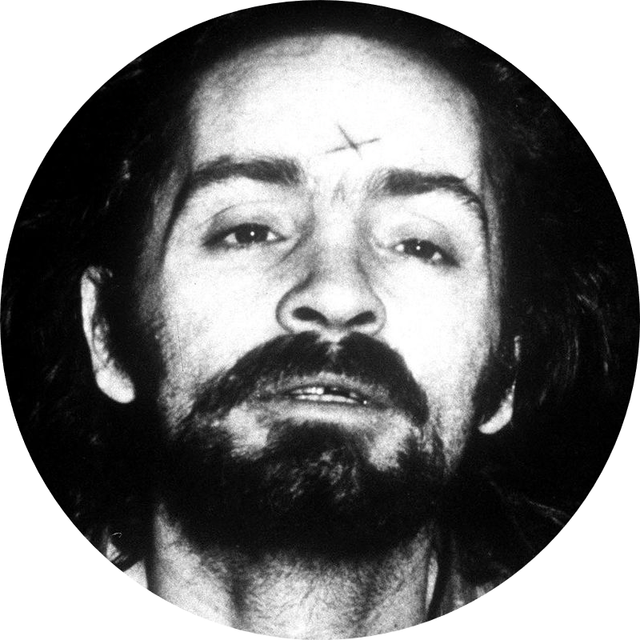
*Father Charles Manson*
*1934-2017*
Charles Manson was the fore father behind the creation of Oracles Of The End. He created it with a small idea of reuniting people together without regarding their culture,
physical features, past life tragedies, etc. The world is tarnished and falling appart and Manson wanted people to be enlightened about the fact that they are turning us into a mindless cog in society where we are slaves to materialistic concepts
created by the society. He wants us to break free and be enlightened
A few words by our father
We believe that dress code is important during certain events as it promotes discipline among the members. The clothes will be provided by us during these events. Some events may require the *Symbol Mask* to be worn by the member as the event requires
it.
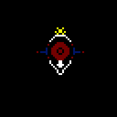
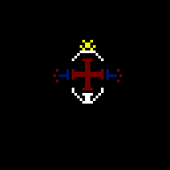
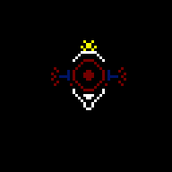
*Male Gender*
*Other Gender*
*Female Gender*
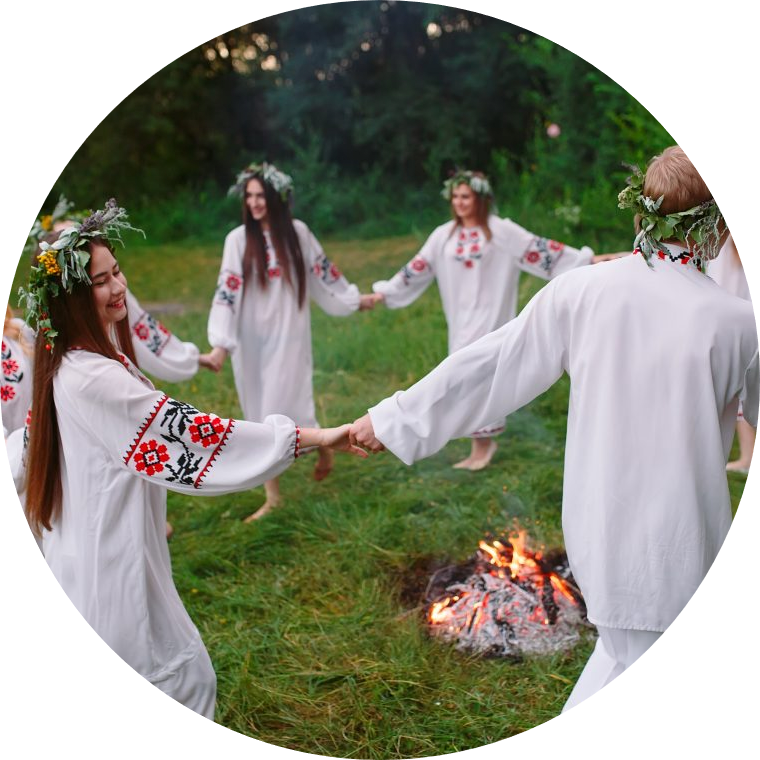
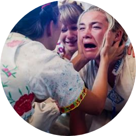
*The Mourning*
When a member is dead we hold a small gathering where we mourn for their death as they will no longer be present with us. The members will then have to form a circle and dance around the fire to
encourage their soul to pass on in happiness and prospher
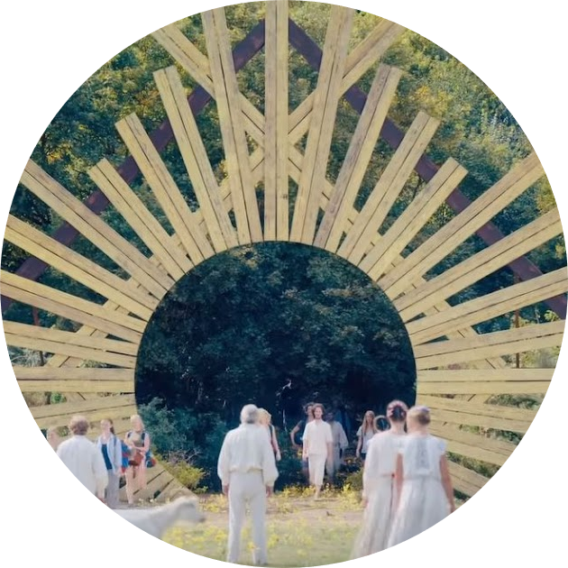
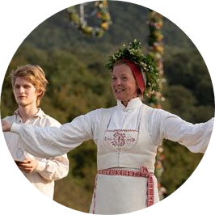
*Gathering Of visitors/New Members*
When people are visiting or want to part of the group then the oracles will hold a gathering where all the members will be gathered together and the new people will be on
the stage with the lords. The lords will then introduce the people to the members and then the members will then have to interact with the people to get to know them better
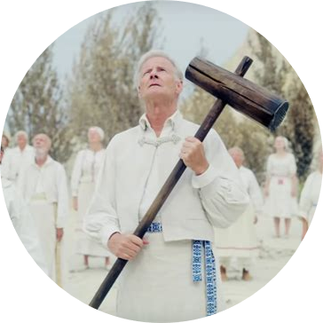
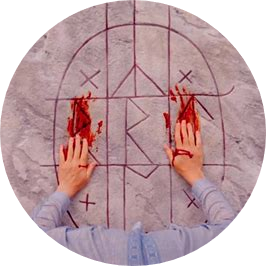
*Passing Of A Lord*
The lords are considered a higher form of power and when he is close to death we honor his death by having the lord sit close to the runic structure and be decapitated by the other lords
and then his blood will spread on the stone. Then the members have to pay their regards to the lord by mourning. Then the lords will placing their offerings to the stone and then give their eulogy to all the members gathered.
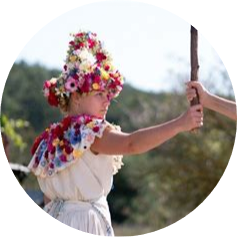
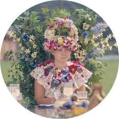
*Succession of a new lord*
After the passing of a lord of a particular sect a new one succeeds him. The new lord is selected by the members where they discuss on who is the better person among them and when
all the members agree on the person he is then passed the tourch and will be considered a lord. They will then be dressed us in greens and a banquet will be held where the new lord will drink the blood of the old lord in a gold challice and then
the members can start with the banquet